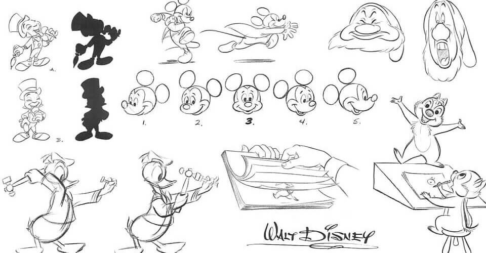
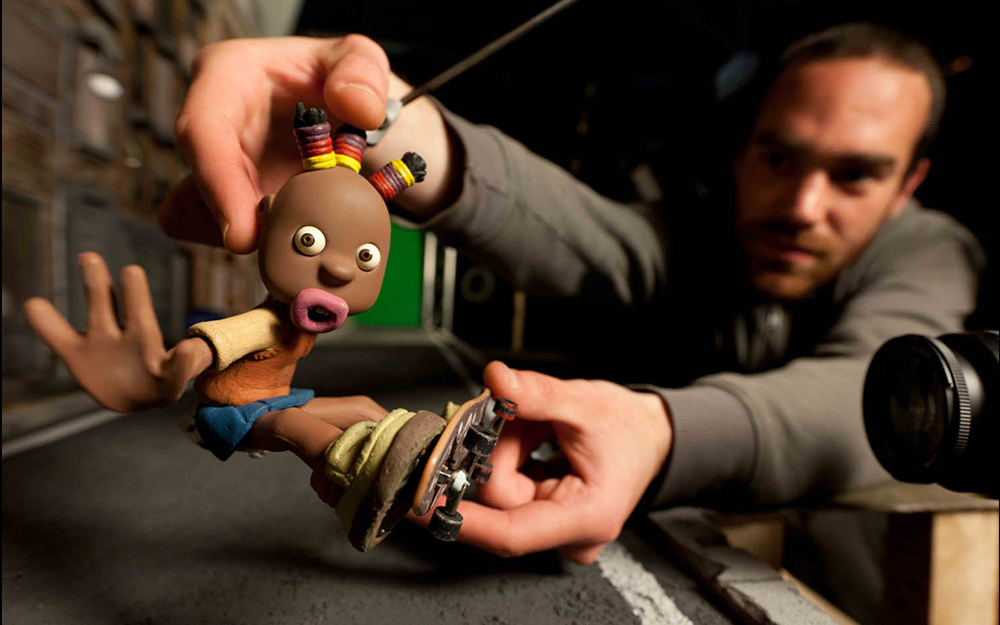
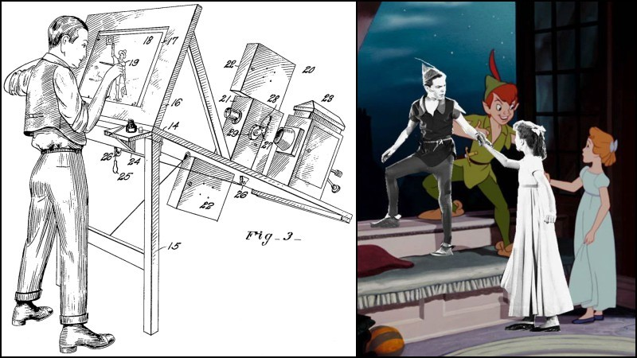
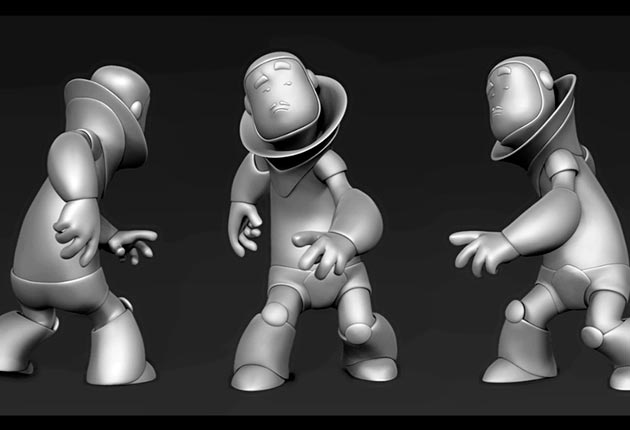

LA ANIMACIÓN
Historia
El concepto de animación se define como un
proceso que permite dotar de efecto de movimiento a una serie de dibujos y su primer expresión fue la conocida
animación tradicional.
Fantasmagorie (1908) primer producción animada
TIPOS DE
ANIMACIÓN
- Animación Tradicional

- Stop Motion

- Rotoscopia

- Animación 3D
